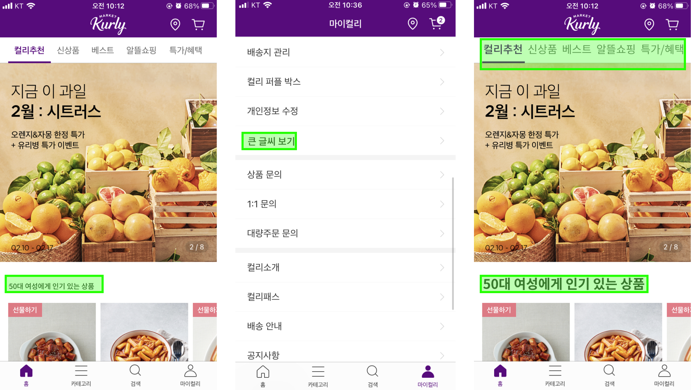
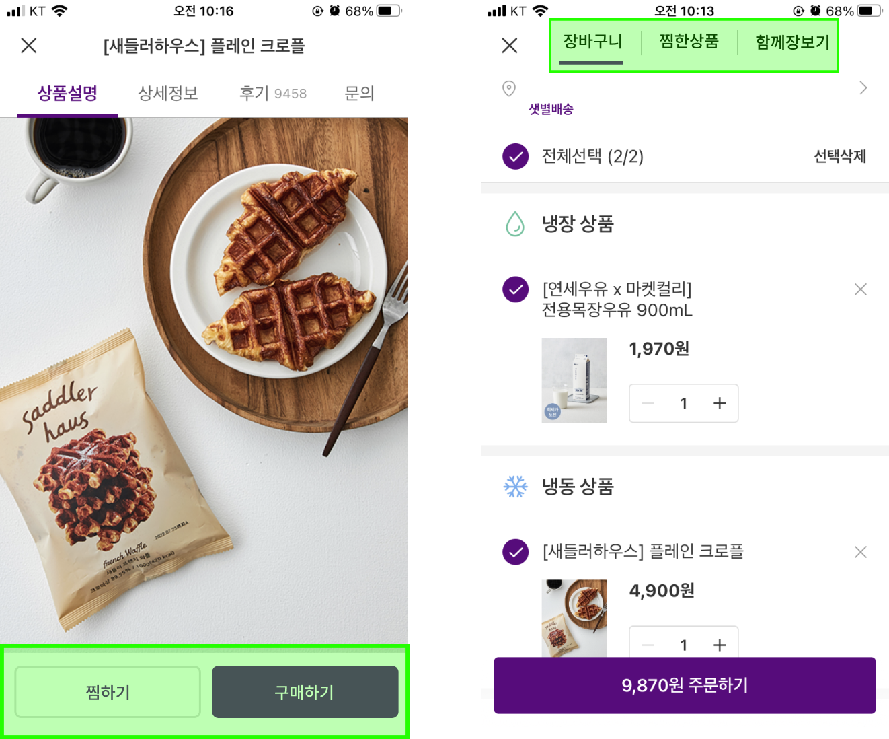
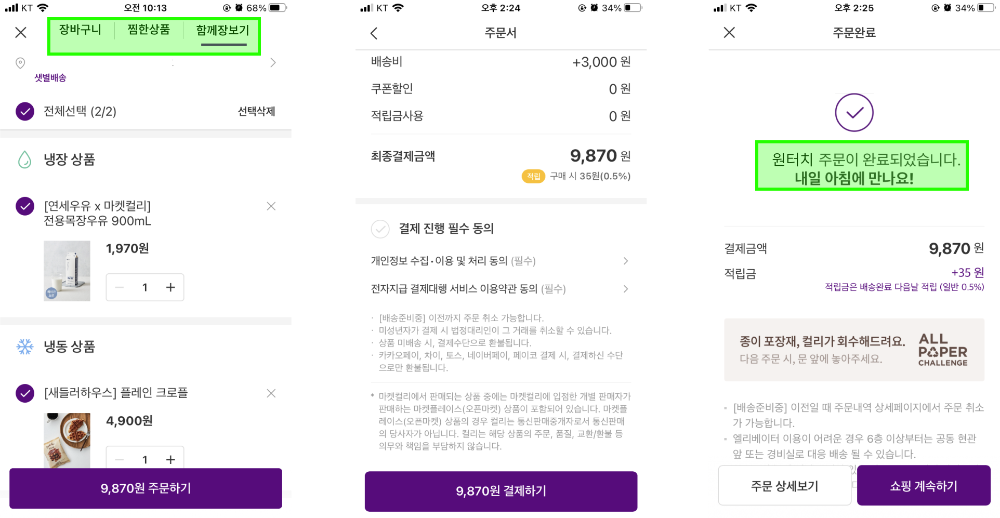

[마켓컬리] 서비스 리뉴얼 기획서
{kind=link}
‘마켓컬리’ 서비스 리뉴얼 기획서
목차
- 분석 개요
- 데이터 리서치
- 인터뷰
- 페르소나 설정
- 고객 여정맵
- 페인포인트 도출
- 벤치마킹
- 서비스 리뉴얼
1. 분석 개요
분석 대상 : 마켓컬리
- 이유 : 팀원 모두에게 익숙한 이커머스 업체로, 코로나 시대 라이프스타일에 요구되는 서비스로 유통 분야에서 빠른 성장을 보이고 있어 주목할 만함
마켓컬리 비전 및 가치
- 비전
식료품의 생산, 물류, 유통을 혁신하여 생산자와 소비자가 함께 행복한 Online Grocery Service를 만듭니다.
- 가치
(1) 나와 내 가족이 사고 싶은 상품을 판매합니다.
(2) 물류 혁신을 통해 최상의 품질로 전해드립니다.
(3) 같은 품질에서 최선의 가격을 제공합니다.
(4) 고객의 행복을 먼저 생각합니다.
(5) 지속 가능한 유통을 실현해 나갑니다.
(6) 함께 변화를 주도하고 새로운 기회를 만듭니다.
분석 방법
- 공감에 집중하여 인사이트를 얻고 문제를 해결하는 ‘데이터 드리븐 디자인 씽킹’ 적용
2. 데이터 리서치
- ‘새벽배송’ 연관어: 마켓컬리(4위), 쿠팡(2위), SSG닷컴/이마트 연관어에 포함

- ‘마켓컬리’ VS ‘SSG닷컴’(이마트몰) VS 쿠팡 비교 분석
긍부정 분석: 마켓컬리는 타 플랫폼들과 달리 긍정의 추이가 변화 없이 고름
{kind=link}
출처: 썸트렌드

세대별 온라인 소비 증감률은 50대가 22.3%로 가장 높은 증감률을 보여줌
출처 : 이코노미스트 뉴스기사

마켓컬리의 5060가입자 수 증가율이 다른 연령대에 비해 높은 증가율을 보여줌
출처 : 마켓컬리

신규 가입자 중 5060 비중은 2020년 18%에서 2021년 26%로 비중이 높아지고 있음
출처 : 마켓컬리

평균 사용 금액은 5060세대가 평균보다 13%를 더 사용
출처 : 마켓컬리

매출 증가율은 전체 평균보다 12%, 구매 횟수 증가율은 전체보다 19% 증가함
출처 : 마켓컬리


‘마켓컬리’ 검색량은 여성의 비중이 77%로 더 높으며, 40대 다음으로 50대가 많이 검색함
출처 : 카카오 데이터 트렌드

50대 이상이 가장 많이 사용하는 쇼핑 앱에 마켓컬리가 낮은 순위를 보이는 것으로 보아, 마켓컬리의 장기적인 가입자 수 증가 및 매출 증가를 위해 5060세대를 타겟으로 한 서비스 리뉴얼이 필요함
출처 : 와이즈앱, 와이즈리테일
- 썸트렌드 ‘마켓컬리’ 5060 세대 긍부정어 분석 - 부정어
: 스트레스, 어렵다, 착잡하다, 쉽지 않다, 불편, 감 오지 않다, 혼란스럽다, 오래 걸리다, 이해가지 않다, 개선되지 않다, 자신없다
3. 인터뷰
- 응답자 정보 - 만 66세 남성 직장인
질문지
- 마켓컬리를 사용하게 된 계기는?
- 마켓컬리를 얼마나 이용하는지?
- 마켓컬리에서 주로 구매하는 상품은 무엇인지?
- 마켓컬리를 이용하면서 편리한 점과 불편한 점은 무엇인지?
- 마켓컬리에서 장바구니에 상품을 담을 때 어려운 점이 있는지?
- 물건 검색할 때 혹은 결제할 때 불편한 점? 물건을 받을 때 어려운 점이 있는지? 후기 사용 또는 작성하는데 어려운 점이 있는지?
- 교환 환불 경험, 포인트 적립 소멸, 푸쉬 알림, 쿠폰 사용, 신선식품 vs 생활용품, 친구 추천 초대, 찜하기 등
- 마켓컬리 이용 배경 - 아들의 권유로 시작 - 오프라인(대형마트)에서 장보기가 우선 - 급하게 필요한 것이 있거나 쿠폰 있을 때 주로 구매
- 인사이트 도출 - 글씨가 작아 상세 설명 읽기 어려움 - 첫 구매 시 결제 수단 등록하는 과정 번거로움 - 후기 읽기 어렵고 도움 되는 후기 없어 읽지 않음 - 추천 리스트의 상품이 어떤 기준으로 추천되는 것인지 알 수 없음 - 찜하기 기능의 존재에 대해 모르고 있음
4. 페르소나 설정

- 생활 패턴
- 아침 식사 후 출근
- 점심은 동료와 먹거나 도시락으로 해결
- 퇴근 후 장을 보고 요리함, 가끔 음식을 사가거나 배달 시켜서 가족과 식사
- 밤에 유튜브로 요리 관련 영상을 보거나 내일 가져갈 도시락을 준비함
- 특징
- 20대 자녀와 남편과 함께 거주
- 코로나 이후로 집에서 온 가족이 밥을 먹을 시간이 많아짐
- 모바일 앱은 카카오톡과 유튜브 정도만 사용
- 페인포인트
- 가족들과 건강하게 먹고 싶고 도시락도 싸가야 하는데 요리가 버거워지고 있음
- 코로나 이후 장을 자주 봐야만 하는데 바빠서 마트에 갈 시간이 부족하며, 가족과 더 많은 시간을 보내고 싶음
- 아침 식사도 할 수 있게 새벽 배송이 되는 앱도 써보고 간편식도 사보려고 하는데 어떻게 사용해야 하는지 어떤 제품을 골라야 할지 모르겠음
5. 고객 여정맵

- 사용자 중심의 메인 페이지 개선
- 큰 글씨 및 간략한 설명 필요
- 장바구니 및 찜하기 UI 개선
- 결제 간소화 및 대리 결제 시스템 필요
6. 페인포인트 도출
1) 메인 페이지
- 메인 페이지가 ‘컬리추천’이며 추천 영역에 큐레이션 되는 기준을 알기 어려움 : 사용자가 이전에 보았거나 구매한 상품 기준으로 큐레이션 되는 것으로 추정
- 나와 비슷한 나이, 소비 패턴을 가진 사용자가 어떤 상품을 구매하는지 알 수 없음
- 5060세대에게 글씨 크기가 작아서 불편함

2) 장바구니 및 찜하기
- ‘찜하기’ 기능인 하트 버튼이 존재하나 5060세대가 인지하기 어려움
- 버튼을 눌렀을 경우 색만 채워지는 형태로 ‘찜하기’ 기능인지 알 수 없음
- 찜한 상품을 장바구니에서 볼 수 없고 ‘마이컬리’에서 찜한 상품 내역을 다시 찾아서 들어가야 함

3) 결제
- 장바구니에서 주문하기를 누르면 결제 단계로 넘어감
- 결제 수단에서 ‘신용카드’ 선택 시 해당 카드 결제 영역으로 넘어가며 복잡하게 느낄 수 있음
- ‘간편 결제’ 선택 시 사용하는 간편 결제 서비스가 없을 경우 진행 어려움

7. 벤치마킹
1) 이마트몰
- 함께 장보기
- 이마트몰 장바구니에서 ‘함께 장보기’라는 서비스 운영 중
- 장바구니 이름과 주소를 설정하고 친구를 초대하여 함께 상품을 골라 장바구니에 넣으며 장을 보고 배송 받을 수 있음

2) 쿠팡
- 찜하기
- 쿠팡은 하트 아이콘을 누르면 “찜한 상품에 저장되었습니다.”라는 팝업 메세지가 등장
- 장바구니 내에서 찜한 상품을 함께 확인할 수 있음
{kind=link}
- 결제
- 첫 결제 수단 등록 후 ‘결제하기’ 버튼만 누르면 바로 결제가 완료
{kind=link}
8. 서비스 리뉴얼
1) 메인 페이지
- 유저의 나이 및 성별에 따른 추천 큐레이션을 반영
- ‘큰 글씨 보기’ 선택 시 다른 메인 페이지 제공

{kind=link}
2) 찜하기
- 기존 하트 아이콘에서 ‘찜하기’ 문구를 넣어 직관적으로 UI 수정
- 찜한 상품을 살펴보기 쉽게 비교가 가능하도록 장바구니 옆에 ‘찜한 상품’ 탭 추가

{kind=link}
3) ‘함께 장보기’ 및 원터치 결제 시스템
- 장바구니 탭에서 ‘함께 장보기’ 추가하여 가족과 함께 장바구니에 물건을 담을 수 있게 함
- ‘함께 장보기’ 이용 시 함께 장보는 가족 중 아무나 결제를 할 수 있게 함
- 기존 결제 시스템을 간소화 한 원터치 결제 방식 추가

{kind=link}